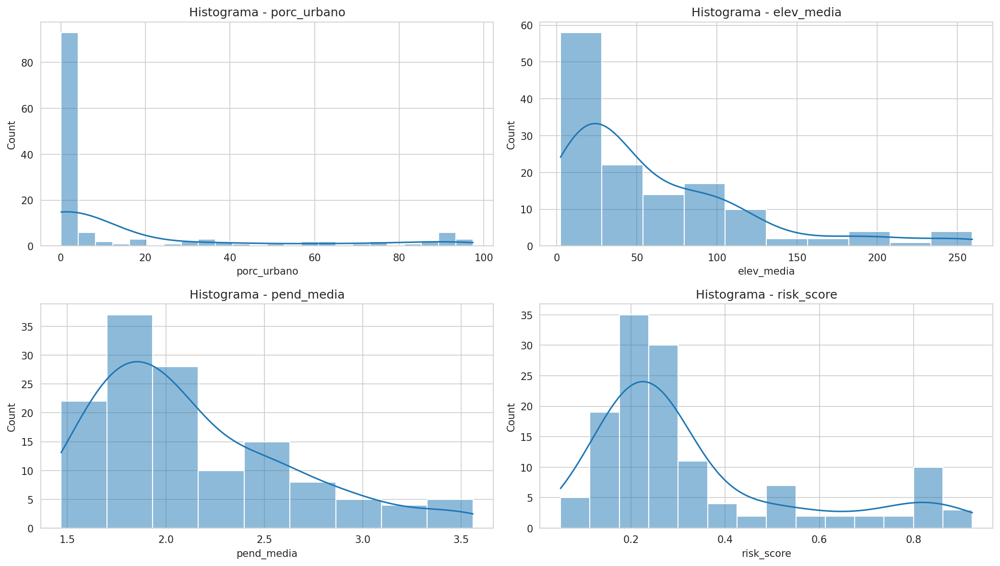
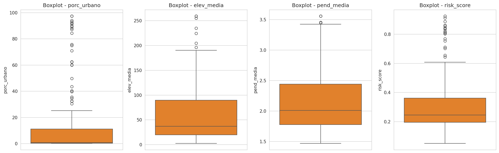
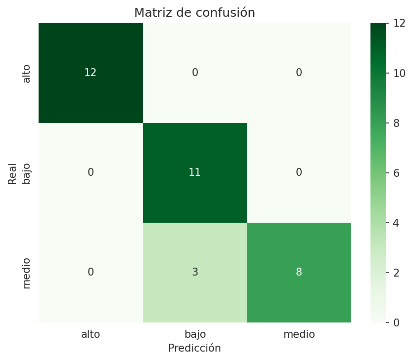

Resumen Ejecutivo
Contexto del Proyecto
Este prototipo presenta el sistema de clasificación de riesgo hídrico para la Provincia de Buenos Aires, basado en la metodología CRISP-DM. El objetivo es priorizar recursos de Defensa Civil y planificación de obras públicas.
135
Partidos Analizados
3
Niveles de Riesgo
Distribución de Riesgo Actual
Análisis Exploratorio de Datos (EDA)
Distribución de Variables Críticas y Boxplots


Variables Analizadas del Dataset
| Variable | Tipo | Descripción |
|---|---|---|
| porc_urbano | Continua | % de superficie impermeable (suelo urbano) |
| elev_media | Continua | Altitud media en metros sobre el nivel del mar |
| pend_media | Continua | Pendiente media del terreno en grados |
Modelo de Clasificación (Random Forest)
Métricas de Performance
| Métrica | Valor |
|---|---|
| Accuracy | 97.5% |
| Precision | 0.98 |
| Recall | 0.97 |
| F1-Score | 0.98 |
Visualización del Modelo

Análisis de Error
La matriz muestra una alta precisión en la clasificación de clases "Alto" y "Bajo", con una mínima confusión entre clases adyacentes.
Visualizaciones GIS Interactivas
Simulador de Predicción Individual
Input de Variables de Terreno
Resultado de Clasificación:
ALTO RIESGO
Prioridad Máxima de Obras
Esperando entrada...